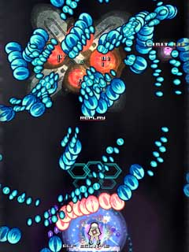

Hellsinker.私的マニュアル
はじめに
Hellsinker.（ヘルシンカー）は非常に戦略性の高いシューティングゲームです。
しかしその硬派すぎるデザイン・システムのお陰で非常にとっつきが悪く、残念ながらはなから敬遠若しくは途中で挫折してしまう人も多いと思います。
特に裏ラスボスとまで言われる説明書（概要と手引き）の難解さは「ひらにょん語」とまで呼ばれ、プレイヤーの前に立ち塞がります。
ですが、このままこの超名作が埋もれてしまうのは非常に惜しい。
そこで拙い文章ではありますが、私的マニュアルを綴ってみようかと思います。
尚、このページはあくまでヘルシンカー本編や「概要と手引き」の理解度を深めるための補助的なコンテンツです。
多すぎる情報量を極小まで削り取り、何を基準に考えたら良いかの方針を提示するものであり、いわゆる攻略ではありませんのであしからず。
書式
解説中、たまに色つきの枠に囲まれたトピックを置く事があります。
トピックはその色によって次のような特徴を持ちます。
灰色の枠のトピックは特に重要だったり、その章のまとめのような役割を持ちます。最低限ここに書かれている事には目を通して貰えると幸いです。
白い破線の枠のトピックは理解を助ける補助的な役割を担います。コラムだったり何気ない話題だったり。
緑色の枠のトピックは理解のために削除された情報を提示する役割を担います。さらに上を目指すためのステップアップのトピックであり、初心者は読み飛ばした方が良いでしょう。
メニュー
１．ヘルシンカーとは
２．ボタン設定と呼称
３．セッティング
４．キャラクタセレクト
５．蓑亀
６．ゲージ類を理解する
７．システムを理解する
８．防御関連のシステム
９．進行リスト
１０．キャラクタセレクト２
１１．それから
「難解」「複雑」といった単語で表現される事の多いヘルシンカーですが、実はシューティングとしての難易度は非常に「簡単」な部類に入ります。
特殊すぎるゲームですのであまり他のシューティングゲームとの比較は意味を成さないのですが、
このページを見ているほとんどの方は東方シリーズをプレイしていると思いますのであえて東方を例に挙げますと
東方風神録のEasyをクリア、もしくはNormalを３～４面あたりまで到達出来る腕前なら余裕でヘルシンカーもクリア可能です。
ただし、ただ自機を駆ってショットを垂れ流していればクリア出来るというものではありません。
東方シリーズが「戦術」のゲームならば、ヘルシンカーは「戦略」のゲームだからです。
東方シリーズの最大の特徴はボスの弾幕「スペルカード」
その弾幕によって彩られた幾何学模様の美と、弾幕の形状や名称によって掘り下げられたキャラクタ性が人気を博しています。
プレイヤーは迫る弾幕を如何にして避け、撃破するかの戦術を問われます。
弾幕を見せる（魅せる）事がひとつのテーマであるので、スペルカードそのものを回避する手段はありません。
中には弾幕がある程度構成されるまでボスにダメージが通らないものもあったりします。
対してヘルシンカーの場合は、とある敵の攻撃・弾幕に対する対処としては以下のものが挙げられます。
・真っ向勝負で避ける
・撃たれた弾幕そのものを消す
・弾源を封じる
・弾幕が展開される前に撃破する
・そもそも弾を出す敵を出さない
・ルートそのものをすっ飛ばす
迫り来る攻撃に対して、その都度どう対処していくか考えて組み立てていくのが最大の特徴です。
勿論その戦略を上手く組み立てていくためには覚えることは沢山あります。
自機の性能も覚えなくてはなりませんし、敵の特徴や攻撃パターン、弾幕への対処なんかもそうです。
面白いのは、一度知って（識って）しまえば、反復練習はさほど必要が無い所です。
「この攻撃はこう来るからこう対処すれば良い」と一度覚えてしまえば高度なテクニックは要らず、ぶっつけ本番でも実践出来てしまうのです。
以下に例を挙げます。
２面道中。画面中央下でのほほんとしていると、次から次へと雑魚編隊が現れ大量の自機狙い高速弾を撃ってきます。
避けきれずにちゅどーん

ですが、予め雑魚編隊が来る事を知っていれば
画面上部に陣取って敵の攻撃を封じる事が出来、
１発の弾を撃つ事も１歩も動く事も無く通過出来ます。
激しい敵の攻撃をいかにヌルくしていくかを考えるゲームとも言えます。
特に稼ぎを意識しなくてもクリアまでに10や20は余裕で１ＵＰしますし、
確かに覚えることは沢山ですけれど、一度覚えてしまえば端から見ればもの凄い弾幕を華麗に避けるスーパープレイに見えてしまうこのゲーム。
思考遊戯に挑戦してみるのは如何でしょうか。
■こんな人にオススメ
・シューティングは好きだけど反射神経が追いつかないという人
・頭を使うのは嫌いじゃない人
・普段STGを全くやらない、でも興味はある人
・やっぱりSTGのボスは巨大メカ＋パーツ破壊じゃなきゃって人
・以下のゲームのどれか一つでも死んだら墓まで持っていこうと考えている人
メタルブラック・レイシリーズ・ダライアスシリーズ・バトルガレッガ・レイディアントシルバーガン・etc...
本ページは解り辛すぎるヘルシンカーの理解の助けとなる事を目的としています。
そのため多くの与えられた情報を極小まで削り取り、何を基準に考えたらよいかの指標を示すために
曖昧な表現は理解の妨げになると考え「必要ない」「見なくて良い」等の断言口調で切り捨てる事があります。
当然それらの切り捨てられたコンテンツやフィーチャーは将来的に必要になるものですが、この点予めご了承下さい。
ヘルシンカーは８方向レバー＋３ボタン（＋α）のシューティングゲームです。
ボタンはそれぞれ
・メインショット（ＭＳ）
・サブウェポン（ＳＷ）
・ディスチャージ（ＤＣ）
という名前がついていますが、
説明の中でMSだのSWだの言われても一瞬どれの事なのか解りづらいので
●Ａボタン - ショット
●Ｂボタン - サブウェポン
●Ｃボタン -
ボム
このように表記します。
Ａボタンはショットボタンです。全キャラ共通で押すと弾が出ます。
このゲームでは押しっぱなしで溜めたり、素早く２回押したり、他のボタンと同時押ししたりと特殊な使い方が多いですが
一番押すボタンである事には間違いありません。
Ｂボタンはサブウェポンボタンです。第２の攻撃ボタンです。
選んだ機体の特徴が一番出るボタンでもあります。
このボタンを使いこなす事で戦略の幅がぐっと広がります。
Ｃボタンはボムボタンです。押すと無敵を伴った強い攻撃が繰り出せます。
ヘルシンカーの場合、いわゆる普通のシューティングにおける緊急回避的なボンバーという認識はしない方が良いです。
勿論無敵付きなので緊急回避にも使えますが、どちらかというとここ１番でのより強い攻撃として使う意味合いが強いです。
ボムゲージは勝手にどんどん溜まっていく方式ですので、使わないと損です。
初心者はむしろ溜まったら即使うくらいの勢いでかまわないと思います。
発射直前には無敵時間がまだ発生しないものが多いので食らいボム的な使い方をしがちな方は要注意。
感覚としてはバトルガレッガのウェポンの使用法に近いものがあります。
もうひとつ第４のボタン低速移動ボタンがありますが、
ボタンがもうひとつ増えると非常に混乱するのと、そもそも低速の無い機体がいたり別の機能が割り当てられていたりと
低速というフィーチャーそのものがあまり重要ではないので無視してかまわないと思います。
操作はゲームパッドをお奨めします。
この時、右手の親指だけでボタン操作を行うのはあまりお奨めできません。
ヘルシンカーは同時押し操作が非常に多く、Ａ＋Ｂを始め、「Ａ＋ＢしながらＣ長押し、その後Ａ連打してＡ＋Ｂに戻る」なんて複雑な操作も必要とします。
平手持ちで５本の指を使って押すか、ＰＳパッド等でＬＲを駆使する等各自工夫して下さい。
ゲームパッドのボタン設定はHellsinker.フォルダ内のHS_padas.exeでセッティング出来ます。
何かいろいろありますが、前述したＡメインショット、Ｂサブウェポン、Ｃボムの３つのボタンさえ決めればあとは適当でかまいません。
ボタンセッティングはHS_padas.exeを起動
ゲームを起動すると謎のネームエントリーの後、メニュー画面に到達します。
最初は非常にゴチャゴチャしていてどこに何が配置されているのか理解出来ないと思いますが、
ここでは真ん中のメニューカーソルと下に表示される日本語のみ注目すれば大丈夫です。
上より
・ゲームスタート
・設定
・戦績
・ゲーム終了
です。
特に設定をいじる必要は無いのですが、設定画面の上から６番目の「被弾判定表示」はSHOW（表示する）にしておいたほうが良いかもしれません。
重要なのはキャラクタセレクトの方法。
メニュー画面でカーソルを左右に入れると一番下の黄色い文字が変化しますが、これがキャラクタセレクトです。
普通のゲームだと何をするか（ゲームをプレイするのかリプレイを参照するのか）行動を選択してから最後にキャラクタをセレクトしますが
ヘルシンカーはまず最初にキャラクタを選んでから各種モードに移ります。
蓑亀で取ったリプレイは
まず蓑亀にキャラクタをセットしてからリプレイ画面に移行しない限り表示される事はありません。
リプレイはキャラを選んでからＢボタンです。キャンセルするつもりでＢを押すとリプレイ画面に行ってしまうのでびっくりします。
メニュー画面では
上下で項目選択
左右でキャラクタ選択
Ａで決定
Ｂでリプレイ
さていよいよ機体選択ですが、まずは何はなくともMINOGAME（蓑亀）を選択して下さい。
他に望むキャラがいたとしても、ゲームに慣れるまでは蓑亀を使う事をお奨めします。
蓑亀をお奨めする理由は以下の通り。
・ノーリスクの無敵技を持っている。ボムと合わせるとかなりの長時間無敵でいられる
・上記の無敵がある事である程度のゴリ押しが可能
・やることが少なくて済むので、初心者でも余裕が出来る＝周囲を観察する余裕が出来る
・敵に向ける意識が少なくて済むので、システムの理解が早まる
ここでテーマとするのは
ゲームシステムの理解です。キャラ特性はまだ先です。
ですので、比較的やることが少なく安全に進められる蓑亀でまずはゲーム全体の雰囲気になれるのが先決なのです。
ある程度システムを理解し、独り立ち出来た頃に改めて本当のキャラクタセレクトの時間がやってきます。
言うなれば自動車教習所で教習車に乗って順路を回りながら標識やケース毎の対応法を学ぶようなものです。
その後教習車が気に入ればそのまま乗ってもかまいませんし、他に好きな車に乗り換えてもかまいません。
とりあえずMINOGAME（蓑亀）使っとけ
ゲームを起動させてメニュー画面になったら、レバーを左右に入れて画面の一番下の名前をMINOGAMEに合わせます。
項目の一番上を選んでゲームスタート。
開始前にセットアップメニューが開きます。
一番上は低速設定。
デフォルトの低速移動ボタンを押している間だけ低速移動にするのが良いと思います。
ショットボタン押しっぱなしで低速というのは一見良さそうに見えますが
蓑亀は常にＡボタンを押しているキャラ（後述）なので相性が悪いです。
真ん中の項目はライフ設定。
ここは問答無用で＋１にしておきましょう。
ここで設定をユルくしておいても特に目立ったデメリットはありません。
最後の項目は防御補助設定。
ここは必ず真ん中のSOLIDSTATE（ソリッドステート）を選んで下さい。
これはボムが使える状態ならば被弾しても無かったことにしてくれる、「オート喰らいボム」です。
各面３回までしか使えませんが、ボム抱え死にがなくなり、事実上残機が３つ増えるのと同義ですので選ばないと損です。
セットアップメニューではSOLIDSTATEを選ぶ
蓑亀さん（仮免練習中）で使用する技は３つ。たった３つです。色気を出したければもう１つ追加してもかまいません。
●ニムバスクラスターＹＢ＜涅槃＞
☆サブウェポンゲージＭＡＸ時にＡ押しながらＢ
通称「涅槃」
簡単に言うと「Ａを十分にタメながらＢを押す」です。
蓑亀最大にして最強の武器。目の前に大きな白いサークルを展開。このサークルは攻撃判定を持ち、
中に入ると完全無敵。
サークルは約２秒で消滅。逆に言えば２秒の間は絶対安全圏という事。
●フォビドゥンシェル
☆Ａタメて放す
通称「シェル」
蓑亀の主戦力。ピンクの光を纏った近接攻撃。触れたものをガリガリと削る。
体当たり攻撃なので単独では恐ろしくてとても使えたものでは無いが、涅槃と組み合わせると一気に使い勝手の良い技へと変貌する。
●アズールロータス
☆Ｃ
ボム。
自分を中心として画面全体をカバーする強攻撃判定を出す。
結構発動時間が長いので使い勝手が良い。ボム中も移動や攻撃等の他の行動を受け付けているのでシェルを併用すると高火力が期待出来る。
色気を出した場合のもう１個
●リアリティーヘッジＲＴ＜奈落＞
☆サブウェポンゲージＭＡＸ時にＢ
通称「奈落」
斑鳩の力の解放（黒）みたいなのが飛んでいくホーミングビーム。高威力なうえ長時間ガリガリしてくれるのでとても強い。
コマンドが防御の要である涅槃とかぶっている関係上、奈落と涅槃はどちらか一方しか出す事が出来ないため、攻め時にピンポイントでの運用を推奨する。
基本は常にＡ押しっぱなしです。
敵の集団に弾幕を張られた・倒したい敵がいる・通行の妨げになる等々、攻撃や防御がしたくなった場合に
おもむろにＡを押しっぱなしのままＢボタンを押します。
涅槃が発動し、目の前に白いサークルが出現しますので間髪入れず飛び込みましょう。
白いサークルの中にいる限りは完全無敵です。弾だろうと敵本体だろうと触れてもミスになりません。
涅槃の中で倒したい敵に近寄ったら一瞬だけＡボタンを離し、フォビドゥンシェルの攻撃判定を出して攻撃します。
主なダメージ源はこの無敵を利用した強引な特攻による接近戦です。
シューティングゲームと言いながら自らは弾を撃たずにひたすら体当たりを繰り返す時点で
すでにこのゲームが他のシューティングゲームとは一線を画しているのが解ると思います。
涅槃が切れそうになったら、一端引いてサブウェポンゲージが溜まるのを待つか
その場でボムを撃ち、無敵から無敵にコンボをつなげます。
この間もずっとＡボタンは押したままで、次のフォビドゥンシェルを溜めておきます。
ボムが切れそうになったら再度涅槃の出番です。
白いサークルの中でＡボタンを離してシェルを発動。
これで無敵→無敵→無敵の最大コンボが成立しました。
ボムは涅槃が間に合わなかったり、危ないと思ったらすぐに使うクセをつけましょう。
ボムは使ってもゲージが勝手に回復し、またすぐに使えるようになります。使わないのは絶対に損です。
使うのは「涅槃」「シェル」「ボム」の３つのみ
さすがにそれだけでは物足りないという人は「奈落」も使うと良いでしょう。
使い方はサブウェポンゲージがＭＡＸの時にＢボタン。
常にＡボタンは押しっぱなしで行動していますから、
Ａを一瞬離してＢを押す。すぐにまたＡを溜め始めるといった感じで使って見て下さい。
サブウェポンゲージが溜まったら、防御の涅槃を使うか、攻撃の奈落を使うかという２択であるわけです。
サブウェポンゲージＭＡＸ
｜
｜→自分の身が危ない →
そのままＢを押す（涅槃）
｜
｜→それなりに余裕がある →
Ａを離してＢを押す（奈落）
Ａボタンを連打すれば普通にメインショットを発射する事が出来ますが、
これは 絶対に使わないで下さい。
メインショットは威力が低いばかりか、使用するとサブウェポンゲージが最大まで溜まらないという特徴があり
弱いだけならいざ知らず、頼みの綱の涅槃が使えなくなるというマイナス面が非常に大きいのです。
同様にサブウェポンゲージがＭＡＸでは無い時のＢボタン武器も使用を控えるのがベターだと思います。
というものの、クリアするためには全部の技を網羅・駆使しないと厳しいのが好バランスといえましょう。
ていうかラスボスはメインショット無いとかなり無理じゃね？
前項で頻繁に「サブウェポンゲージ」という単語が出てきましたが、ここではそのゲージ関係について記述します。
最低限覚えておくべきゲージ類は画面左側の３種類です。
上からLIFE、SOL、SUBWEAPONです。
LIFEはその名の通り自機の数を示しています。
ここにあるハートの絵が全部無くなるとゲームオーバー。
いくつか数字が書いてありますが気にしなくて良いです。
というか、LIFEゲージそのものもゲーム中はたまに残り数を確認する程度の代物だと思いますので
頻繁に気にする必要の無いゲージではあります。
SOLはボムゲージです。
本当はメインショットの威力にも関わってくるそれはそれは大事なゲージなのですが
蓑亀さんはメインショットを撃たないので純粋にボムゲージだと思って下さって結構です。
ゲージは１～５の数字で表されており、時間とともに勝手に上昇していき、３以上ならばボムが使えます。
なので常にこのゲージの増加量に気を配っておき、３以上になったらボムを…といきたいところですが
実際はゲーム画面に集中していて横のゲージ類を見る余裕など無いと思います。
実は自機周辺のエフェクトでSOLゲージの溜まり具合を確認する事が出来ます。
自機の周囲に円状に配置された橙色の円形のエフェクト。
これの大きい円の数がSOLゲージの数値と同じです（SOL1,2の時はエフェクトはありません）
つまりこのエフェクトが自機の周りに出現した時はボムが使えるという合図です。
またゲージが３以上、つまりボムが使えるようになった時に女性の声（？）で音声ボイスが流れます。
ボイスファイルはHellsinker.フォルダのwav/discharges.wavです。
何と言ってるのかわかりませんがどうしても
「システム オカイドク」と聞こえてしょうがありません。
以上のようにボムゲージが溜まったサインは自機周りのエフェクトやボイスで判断するようにすれば、SOLゲージに目を配る必要はなくなります。
次に覚えるべきSUBWEAPONゲージ。
前項で何度も出てきたサブウェポンゲージです。
無敵攻撃である涅槃を使うのに非常に重要なゲージですが、
これもゲーム画面上で溜まった事を確認する事が出来ます。
涅槃を撃つとき（Ａボタンを押しっぱなしの時）は前方、奈落を撃つとき（Ａボタンを離した状態）は左右に展開されているロックオンサイト
これは別にこの位置に着弾するという意味ではなく、攻撃がこの方向に出ますよというアンカーなのですが
この色が青だとサブウェポンゲージが溜まっておらず、ＭＡＸになると緑になります。
またやはりサブウェポンゲージが溜まるとボイスが流れます。
ファイルはサブウェポンゲージ１段階目がsubok1.wav、２段階目（ＭＡＸ時）がsubok2.wavです。
この２段階目の「スーパーチャージド」というオッサンの声を目安にすると良いでしょう。
その他のゲージに関しては今は覚える必要はありません。
追々必要になった頃にひとつひとつ覚えていけば良いと思います。
右側のゲージ類に至っては全て得点関連なのでクリアラーには縁のないゲージであります。
左右のゲージは覚える必要は実は無いぞ
(tonnyori) OverChargedだった記憶がありますが恐らくどうでもいい事
(Iceshop) ω・）まじか
(Iceshop) でもまこれでいいや（いいのか）
(tonnyori) オカイドクはDischarge is available
かなんかですね（でもまこれででいいや
ゲームをプレイしてまず最初に混乱するのは、ゲーム画面内の情報量の多さ・オブジェクトの多さだと思います。
敵と敵の出す弾は理解出来るとは思いますが、問題は倒した時に発生するじゃらじゃら出るアイテム。
一体どれを取って良いものかわからなくなると思いますが、
実は全部無視しちゃってかまいません。
当然ひとつひとつのアイテムにはそれぞれ効果はありますが、基本的にパワーアップ等が存在しないこのゲームでは
初心者がそれらのアイテムを有用に活用出来る局面はあまり無く、どっちかといえば無理に取りに行って死ぬ事の方が多いです。
まぁ全部いらないとバッサリ切り捨ててしまうのもなんですし、その中でも余裕があれば取っていくと良いものをピックアップします。
●ライフチップイコン
ハートにＬの入ったアイテムです。非常に解りやすいと思います。そして効果も予想がつくと思います。
これをたくさん集めると１ＵＰします。
具体的には、前述のLIFEゲージのハートマークの上にnecessaryと書かれている数字の数だけ集めると増えます。
最優先で集めたいアイテムです。
●SOLイコン
SOLを上昇させます。つまり、ボムゲージをちょっとだけ回復させます。
１面の最後でもの凄いスピードで大量の敵が襲いかかってきますが、奴らは全てこのSOLイコンを出すので
ボム→SOLイコン回収→即、次のボム
という連携が簡単に行えます。
普段は気にする事はありませんが、何かと助けられる局面は多いかもしれません。
ちなみにたまに仲良く並んで降りてくる緑と赤のアイテム。
緑は難易度が上がり、赤は難易度が下がります。
初心者は赤いのを優先的に取っていけば楽になる…かもしれない。
別に緑のを取ってもあからさまにランクが上昇するというわけではないので過敏になる必要はありません。
主な目的は難易度を固定させる事によるパターンの固定ですので、緑を取る事で打開する未来もあるかもしれません。
また、死ぬと大量にまき散らす丸いアイテム。
普通のシューティングゲームだとリスタート救済用のフルパワーアップだったりしますが
このゲームのそれは、死んだ事によって落ちた難易度ランクを上昇させるアイテムです。
つまり初心者にとってはまさに地雷。取らない方が良いかもしれません。
これも死亡によって落ちた難易度を戻す事によってパターンを固定させるためのアイテムです。
・アイテムは無理して取る必要はないぞ
・でもライフチップくらいは取っておくと幸せ
●サプレッションレディアス
このゲームの最大の特徴にして、殺しに来てる弾幕の中でもプレイヤーが生きられる最大の理由
それがサプレッションレディアスです。
サプレッションレディアスはＡボタンを連打していない状態で発動します。
つまり前述の蓑亀（仮免中）の場合は常にＡボタン押しっぱなしですから、常時サプレッションは発動している事になります。
サプレッションレディアスは自機をつつむ青灰色のオーラで
このオーラに触れた敵の弾を遅くし、かき消してしまう能力があります。
つまり避けられなさそうな弾幕が迫ってきても、狭い隙間をかいくぐる必要は無いのです。
真っ向正面から近寄ってガリガリと弾幕そのものを消してしまえば良いのです。
このようなかなり厳しそうな弾幕であっても

真っ正面から受け止めて消し去ってしまう事が出来ます。
蓑亀の場合はもっと簡単で涅槃を重ねて特攻してしまえば終了ですが、
他キャラを使う時は涅槃はありませんので是非とも覚えておいて下さい。
一見万能に見えるサプレッションレディアスですが、敵の弾の形状によって消しやすさが違います。
基本的に丸いのは消せる、尖ってるのは消せないと覚えておいて下さい。
特に注意すべきはしずく型の弾。丸みを帯びているので一見消せそうですが反対側が鋭利な鋭さを持っているため、
消せないどころかあまり速度も落ちません。正面に陣取っていると見事に殺されますので要注意。
弾の大きさは消すまでの時間に比例。
小さくて丸い弾は一瞬で消えますが、大きくて丸い弾は消せると侮って突っ込むと消す前に本体に攻撃が届いてしまいます。要注意。
また、敵弾を遅くしてしまうというのが常に有利に働くとは限りません。
時には弾幕の隙間を弾を遅くすることで潰してしまい、自分の逃げ場が無くなってしまうデメリットも存在します。
ショットがただ垂れ流していては駄目なのと同様、防御手段バリアであるサプレッションレディアスも使いどころを考える必要があります。
●SEAL
第１項で少し触れましたが、このゲームの自機は共通でSEALという能力を持っています。
これは敵に近寄ると敵の発射口に「SEAL」というシンボルが自動でつき、
以後離れない限りずっとその発射口からは弾が発射されないという攻撃封じの能力です。
勿論ものによってはSEAL出来ない攻撃もありますが、ボスの攻撃なんかもほとんど封じる事が出来てしまったり
知っていればものすごく楽になる局面が非常に多いフィーチャーです。
SEALとサプレッションの存在により、ガンガン前へ攻める事が可能なゲームになっています。
リスクには、相応のリターンが待っているという訳です。
・サプレッションレディアスで敵の弾は消せるぞ
臭い弾にはSEAL。リスクはあるが、リターンも大きいぞ
何事も目的達成のためにはプランを小さく分けた小目標が重要です。
ここでクリアまでの目標設定の例を挙げてみます。
１．まずは蓑亀（仮免中）で２面クリアを目指す
２．使用キャラクタの本決め
３．４面クリアを目指す
４．KAGURA解放。２度目のキャラ本決め
５．５面クリアを目指す
６．コンティニューと霊廟をどのタイミングで出すか使うかを考える
７．最終面到達を目指す
８．最終面クリアを目指す
９．以下略。
１，２面は実はキャラクタやシステムを試せるような一種のチュートリアルステージになっています。
ここで今まで述べてきた事をひとつひとつ確認してみましょう。
最初は１面からえげつない攻撃に見えるかもしれませんが、自機の持てる能力とシステムを上手く使えば
そこらのシューティングゲームの１面よりも簡単なゲームになっている事が解るようになります。
２面ボスはかなり厳しいです。４つのコアを破壊する毎に新しいコアが出現し、強烈な攻撃をしてきます。
一見無限に再生するかのように見えますが終わりはあるので頑張って下さい。
実はある事をすると難なく通過出来てしまいます。
ヒントは、２つ目のコアはSEALが効くという事です。
２面が抜けられるようになったらゲームにも慣れてきた頃だと思いますので、
そろそろプレイヤーキャラクタの本決めを行う時期になると思います。
蓑亀の無敵っぷりが気に入ったのならそのまま続行でもかまいませんし
ちょいと火力が足りないと思ったらDEAD LIAR（通称あきひろ）
もっと多種多様な火器を使い分けたいと思ったらFOSSIL
MAIDEN（通称メイデン）
を選ぶと良いでしょう。もう１人（４キャラ）居ますが４面をクリアしないと解禁されません。
４面をクリアすると面ごとのプラクティス、それと新機体KAGURAが解禁になります。
KAGURAはキャラクタセレクト時にポーズボタン（に設定したボタン）を押す毎に名前が変わり、全部で４つの異なる武装の機体になります。
それぞれ「散神無」「劫殺」「緋輪」「神弥」と呼ばれ、どれをとってもマトモな機体はありません。
コンティニューと霊廟について。
このゲームのコンティニュー可能回数は１回です。
また４面以降、突如として決別の霊廟というステージが差し挟まれる事があります。
これは一番左下のゲージTERRAが０になると出現するステージで、一種のボーナスステージです。
確実に残機を稼げますが、その代わりそれ以後コンティニューが使えなくなってしまいます。
そこで長い行程において、どこでコンティニューを使い、どこで霊廟を出現させるかがクリアに於いて重要なポイントとなってくるわけです。
どうすれば最も良いかはプレイヤーの腕と戦略次第ですので、いろいろと試してみて下さい。
システムにも慣れてきたらいよいよキャラクタを本決めする時期となります。
このゲームは機体によって操作から攻略までまったく違いますので、
いろいろと手を出すよりクリアまでは１キャラに絞ったほうが良いと思います。
■DEAD LIAR（デッドライアー）
通称あきひろ（本名があきひろなので）
普通のショット、普通のボムを持つオーソドックスなタイプ。
集中ショットと、何と言っても代名詞たる溜めブレードの攻撃力は爽快。
さらにサブウェポンは設置系と死角が無いように見えるが
防御手段に乏しいためかなりの玄人志向。
攻撃範囲も狭いため狙って刺す計画的な運用が求められる。
失敗するとジリ貧になるが、成功するとその攻撃力は爽快の一言。
■FOSSIL MAIDEN（フォスルメイデン）
読み方はフォッシルかもしれませんがダライアス好きとしてはフォスルを推す。
８方向に撃てるメインショット、優秀なオプション、弾消しレーザー、２つあるボム、速攻に削りにと使えるランス等
非常に攻撃手段が多いのが特徴。そしてその全てを駆使しなければならないため使い分けに苦労する。
覚えてしまえば遠距離狙撃から近接攻撃まで、何でも出来る万能キャラ。
器用貧乏で終わるか超万能ヒロインになるかはプレイヤー次第。
病弱設定からなのか、サプレッション半径が小さく、１ＵＰしにくい。
■MINOGAME（蓑亀）
防御重視型ふたなりオッドアイ即身仏。
再三説明した通り、とにかく無敵→無敵→無敵のコンボが強い。
その代わり総合火力は低め。特にメインショットの弱さと集中的に一定ダメージを相手に与え続けられないのが辛い。
奈落の行き先は運まかせ、涅槃もボムも攻撃範囲が非常に大味で広いため、狙った部分のみを攻撃する手段に乏しい。
したがって敵の堅さと配置がいやらしくなる後半になるにつれてだんだん苦労する事になる。
だがやはり無敵の恩恵は大きいので事故に強く、とりあえずクリアを目指したい人にはお奨め。
KAGURAは４面クリア達成時（例外あり）に解禁される第４のキャラクタ。
キャラセレクト時にポーズボタンを順に押していく事によって４つの装備から１つを選択する事が出来ます。
■KAGURA散神無（ちりじんむ）
愛称「ちりじんむ（笑）」
何よりもボム消費が２なので、ゲージが満タンならば２連発出来るのが強い。
防御設定をSOLIDSTATEではなくADEPTにするとＡボタン押しっぱなしで
サプレッションを張りながらメインショットを垂れ流せる。
メイデンから近接を無くしトリッキーさを薄めた感じのオーソドックスな機体。
■KAGURA劫殺（ごうせつ）
完全無敵の合体分離オプションがついている。
R-TYPEとかクレスタとかそのテのが好きな人におすすめ。
当然ながら分離オプションを駆使して戦っていく事になる。
ボスのコアにオプションをめり込ませた時の攻撃力と得点力は異常。
ただし分離時の自機本体の攻撃力・防御力は貧弱なので要注意。
■KAGURA緋輪（ひまわり）
超火力型機体。
メインショット、溜め向日葵、ボムと実質攻撃手段が３つしか無いシンプルすぎる機体。
張り付いた時の攻撃力は凄まじく、一度その味を覚えたら病みつきになってしまう人も。
ただし足が遅く、防御手段にも乏しいためDEADLIAR以上に計画的な運用が求められる。
最も普通のシューティングに出てくる機体に近い感覚で扱える、攻撃は最大の防御を地でいく機体。
■KAGURA神弥（おみわたり）
・メインショットに弾数制限がある
・ソードを振り回せる
・ゲージＭＡＸのボムが超超威力
全７機体中最も変態な、銀銃好き御用達機体。
それぞれの武装の威力は半端無いのだが、そのどれもが当てづらいうえに溜まりづらいので
まるで格闘ゲームのコンボを考えるような連携を組まなくてはならない。
失敗すると悲惨な事になるが、上手くハマった時のスタイリッシュさは異常。最も頭脳プレイが光る機体といえる。
とまぁ駆け足で解説してみましたが如何なもんでしょう。
結局解りづらいだけかもしれません。
ここが解らないとかもっとこうした方が良いという意見等ありましたらお気軽にご連絡下さい。
序盤は解らない事だらけであまり面白くないかもしれません。
でも５面過ぎたあたりから「やべえこれもの凄く面白くね？」と感じてくると思います。
そこに到達するまでの指標として少しでも役に立てられれば幸いです。
是非とも自分の力で最終面、そしてクリアまでやってみて欲しいです。
「ラストは拳銃の早撃ち」「正しいクリア法は猫出したらゲームオーバーする事」「銀河一後方に強いワインダー」
「ウルトラマンのサマソ怖いです」「ドリル弾稼ぎ」「ラストレター」「力の解放合戦」「反魂蝶八分咲」
この辺の単語にピンと来る方は絶対やらないと損します。
それではこの辺で。
KEEP YOUR DIGNITY.
■リンク集
HELLSINKER.NET
RUMINANT'S WHIMPER
犬丼帝国 RUMINANT'S WHIMPER総合 Wiki
猫次元裏＠へるしんか．
HELLSINKER.スコアボード
■他に参考にすべき動画
PV
紹介になってない紹介
操作説明（キーボード準拠）
霊廟メイデン速攻。とりあえずこんなゲームだと紹介するには最適かも。
標準装備バリア、サプレッションの偉大さを思い知る動画。
あるある動画
おまけネタ
2010/12/19 細部修正
2008/12/22 キャラクタ説明等微修正
2008/06/21 暫定公開
■□■
Copyright(C)2008
Quarter Iceshop / Himuro Tomoe / saNari
All rights reserved.
E-mail:iceshop@q-ice.com
{kind=link}